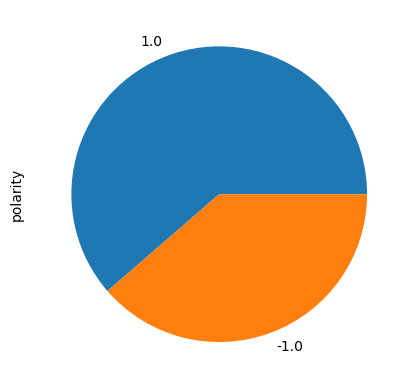
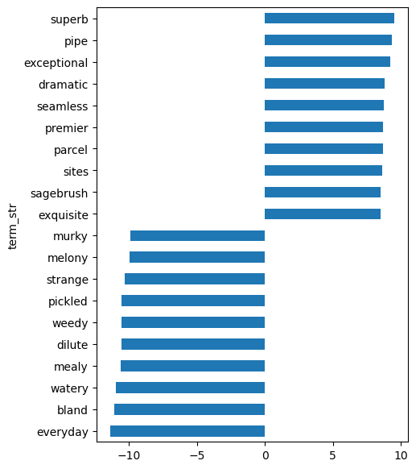

data_in = '../data'
data_out = '../data'
prefix = 'winereviews'Metadata
Course: DS 5001
Module: 12 Lab
Topic: Classification with Naive Bayes
Author: R.C. Alvarado
Date: 16 April 2023 (revised)Purpose: We attempt a Naive Bayes classifier for the sentiment of a corpus of wine reviews. We use the score of the review as our sentiment value, assuming that a bad review will have negative sentiment and a good review will have positive sentiment.
Overview
The prediction of the document’s (\(d\)) label or class \(c\) can be viewed as problem of conditional probability: * \(p(c|d)\) ? * \(p(c|d) = \large\frac{p(c)p(d|c)}{p(d)}\) * \(p(c|d) = p(c)p(d|c)\)
We use Maximum A Posteriori estimation (MAP) to predict the label: * \(p(c|d) = \underset{C}{\mathrm{argmax}} p(c)p(d|c)\)
To solve this, we need to estimate the values of the priors \(p(c)\) and the likelihoods \(p(d|c)\). * Prior: \(p(c)\) the independent frequency of a given category. * Likelihood: \(p(d|c)\) the frequency of the document for a given category.
The likelihoods are essentially unigram language models for each label. They are similar to topics in this sense.
Note that \(d\) is a sequence of words \(w_{1}^{N}\), which means we apply the independence assumption to avoid the chain rule: * $p(d|c) = p(w_{1}^{N}|c) = p(w_{1}|c)p(w_{2},w_{1}|c) … $ * \(p(d|c) = \prod{p(w_{i}|c}) = \sum{log(p(w_{i}|c))}\)
So, we get: * \(p(c|d) = \underset{C}{\mathrm{argmax}} p(c)\sum{log(p(w_{i}|c))}\)
We can estimate the priors and the likelihoods using Maximum Likelihood Estimation (MLE) from data that gives
the joint distribution of documents and labels, where documents are represented as bags of words.
This joint distribution is just the TOKEN table with the label from the LIB table joined to it. * \((d,w,c)\)
Set Up
Configure
Set some parameters
We create an empty static class to store our parameters.
class Params:
qntile_P = .9
qntile_N = .1
n_sets = 4 # We want 4 so we can use 3 for training, 1 for testing.
smooth_alpha = .1
prior_method = 'docs' # 'tokens' or 'docs' Import
import pandas as pd
import numpy as np
from numpy import log2 as log
from numpy import exp2 as exp
from numpy.random import randint
import lib.textman as txPreparation
Import wine reviews
docs = pd.read_csv(f'{data_in}/{prefix}/winereviews.csv', index_col='doc_id')docs.head()| doc_content | points | |
|---|---|---|
| doc_id | ||
| 0 | Aromas include tropical fruit, broom, brimston... | 87 |
| 1 | This is ripe and fruity, a wine that is smooth... | 87 |
| 2 | Tart and snappy, the flavors of lime flesh and... | 87 |
| 3 | Pineapple rind, lemon pith and orange blossom ... | 87 |
| 4 | Much like the regular bottling from 2012, this... | 87 |
Convert points to labels
Keep only reviews with high and low ratings
bound_P = int(docs['points'].quantile(Params.qntile_P))
bound_N = int(docs['points'].quantile(Params.qntile_N))
docs = docs[(docs.points <= bound_N) | (docs.points >= bound_P)]bound_N, bound_P(84, 93)docs.sample(5)| doc_content | points | |
|---|---|---|
| doc_id | ||
| 124893 | Bold, ripe fruit flavors and full body give oo... | 93 |
| 88048 | White Merlot? Why not? It's actually a deep ro... | 84 |
| 127183 | Simple pear and apple work the largely nondesc... | 83 |
| 125293 | This impressive Brunello Riserva opens with an... | 94 |
| 127166 | This tastes sweet and simple, with flavors of ... | 82 |
Assign labels for high and low
docs.loc[docs['points'] >= 90, 'doc_label'] = 'P'
docs.loc[docs['points'] < 90, 'doc_label'] = 'N'docs.head()| doc_content | points | doc_label | |
|---|---|---|---|
| doc_id | |||
| 336 | Gritty, heavily roasted aromas of peanuts and ... | 83 | N |
| 337 | An easy and inviting selection, there's a ment... | 83 | N |
| 338 | The wine is earthy and somewhat rustic. There ... | 82 | N |
| 339 | Red in color, with berry and apple aromas, thi... | 82 | N |
| 340 | The nose is muted, despite the slight spritz o... | 82 | N |
Drop points columns
try:
docs = docs.drop('points', axis=1)
except KeyError as e:
if "not found in axis" in str(e):
pass
else:
print(e)docs.head()| doc_content | doc_label | |
|---|---|---|
| doc_id | ||
| 336 | Gritty, heavily roasted aromas of peanuts and ... | N |
| 337 | An easy and inviting selection, there's a ment... | N |
| 338 | The wine is earthy and somewhat rustic. There ... | N |
| 339 | Red in color, with berry and apple aromas, thi... | N |
| 340 | The nose is muted, despite the slight spritz o... | N |
Divide docs into train and test sets
Note: Packages like SciKit learn do this for you. Here we do it from scratch.
Assign random numbers to docs
docs['set'] = randint(0, Params.n_sets, len(docs.index))docs.head()| doc_content | doc_label | set | |
|---|---|---|---|
| doc_id | |||
| 336 | Gritty, heavily roasted aromas of peanuts and ... | N | 1 |
| 337 | An easy and inviting selection, there's a ment... | N | 1 |
| 338 | The wine is earthy and somewhat rustic. There ... | N | 3 |
| 339 | Red in color, with berry and apple aromas, thi... | N | 3 |
| 340 | The nose is muted, despite the slight spritz o... | N | 1 |
Split docs by assigned number
training_docs = docs[docs.set != 0].copy()
testing_docs = docs[docs.set == 0].copy()
del(docs)Drop set columns.
try:
training_docs = training_docs.drop('set', axis=1)
testing_docs = testing_docs.drop('set', axis=1)
except KeyError as e:
if "not found in axis" in str(e):
pass
else:
print(e)See ratio of set sizes.
round(len(training_docs) / len(testing_docs), 2)2.98Convert docs to tokens
Note that we only use the vocabulary of the training data.
training_tokens, vocab = tx.create_tokens_and_vocab(training_docs, src_col='doc_content')
testing_tokens, _ = tx.create_tokens_and_vocab(testing_docs, src_col='doc_content')Clean up results. Remove term_id from tables; just use term_str.
This is only need because we are using a legacy library to do our tokenization.
vocab = vocab[vocab.sw == False]try:
vocab = vocab.reset_index(drop=True).set_index('term_str')
except KeyError as e:
if "None of ['term_str'] are in the columns" in str(e):
pass
else:
print(e) try:
training_tokens = training_tokens.drop(['term_id','token'], axis=1)
testing_tokens = testing_tokens.drop(['term_id','token'], axis=1)
except KeyError as e:
if "not found in axis" in str(e):
pass
else:
print(e)training_tokens.head()| term_str | |||
|---|---|---|---|
| doc_id | sent_id | token_id | |
| 336 | 0 | 0 | gritty |
| 1 | heavily | ||
| 2 | roasted | ||
| 3 | aromas | ||
| 5 | peanuts |
testing_tokens.head()| term_str | |||
|---|---|---|---|
| doc_id | sent_id | token_id | |
| 342 | 0 | 0 | funky |
| 1 | yeasty | ||
| 2 | aromas | ||
| 4 | cinnamon | ||
| 5 | spent |
Convert tokens to bag-of-words
training_bow = training_tokens.groupby(['doc_id', 'term_str']).term_str.count().to_frame('n')
testing_bow = testing_tokens.groupby(['doc_id', 'term_str']).term_str.count().to_frame('n')training_bow.head()| n | ||
|---|---|---|
| doc_id | term_str | |
| 336 | aromas | 1 |
| back | 1 | |
| berry | 1 | |
| better | 1 | |
| briny | 1 |
testing_bow.head()| n | ||
|---|---|---|
| doc_id | term_str | |
| 342 | apple | 1 |
| aromas | 1 | |
| bread | 1 | |
| briny | 1 | |
| cinnamon | 1 |
Transfer DOC labels and splits to BOW — CRUCIAL
We propagate the training doc labels to each of tokens in the docs. Each term_str will then have “votes” for being either P or N.
try:
training_bow = training_bow.join(training_docs[['doc_label']], on='doc_id', how='inner')
# training_tokens = training_tokens.join(training_docs[['doc_label']], on='doc_id', how='inner')
except ValueError as e:
if 'columns overlap' in str(e):
pass
else:
print(e)# training_tokens.head()training_bow.head()| n | doc_label | ||
|---|---|---|---|
| doc_id | term_str | ||
| 336 | aromas | 1 | N |
| back | 1 | N | |
| berry | 1 | N | |
| better | 1 | N | |
| briny | 1 | N |
Training
Estimate class priors \(p(c)\)
\[ \hat{P}(c) = \dfrac{N_{c}}{N_{d}} \]
# training_bow.groupby('term_str')[['n']].sum().join(vocab, rsuffix='r').query("n != nr")if Params.prior_method == 'tokens':
class_priors = training_bow['doc_label'].value_counts(normalize=True)
elif Params.prior_method == 'docs':
class_priors = training_docs['doc_label'].value_counts(normalize=True)print("By", Params.prior_method)
np.round(class_priors, 3)By docsN 0.5
P 0.5
Name: doc_label, dtype: float64Convert priors to logs
class_priors_log = log(class_priors)class_priors_logN -0.999206
P -1.000794
Name: doc_label, dtype: float64# np.round(class_priors_log)Estimate likelihoods \(p(w|c)\)
\[ \hat{P}(w_i|c) = \dfrac{count(w_i,c)}{\sum_{w \in V} count(w,c)} \]
\[ \hat{P}(w_i|c) = \dfrac{count(w_i,c)+1}{\sum_{w \in V} (count(w,c)+1)} = \dfrac{count(w_i,c)+1}{(\sum_{w \in V} count(w,c))+|V|} \]
Now we compute the probability of a token given the label. This will in effect product two language models, one for each label. Key idea = the likelihoods are language models (see Pearl for interpretation of likelihoods).
# training_tokens# class_likelihoods = training_tokens.groupby(['term_str', 'doc_label']).doc_label.count()\
# .unstack(fill_value=0)Note that using the bow means we do not count multiple instances of a word in a doc.
class_counts = training_bow.groupby(['term_str', 'doc_label']).doc_label.count()\
.unstack(fill_value=0)class_counts.head()| doc_label | N | P |
|---|---|---|
| term_str | ||
| aaron | 0 | 4 |
| abbey | 0 | 3 |
| abbott | 0 | 3 |
| abbreviated | 3 | 0 |
| ability | 1 | 30 |
class_counts_smoothed = class_counts + Params.smooth_alpha
class_likelihoods = class_counts_smoothed / class_counts_smoothed.sum()class_likelihoods.sample(10).style.background_gradient(cmap='GnBu', axis=None)| doc_label | N | P |
|---|---|---|
| term_str | ||
| enjoyable | 0.000147 | 0.000196 |
| essential | 0.000001 | 0.000019 |
| intriguingly | 0.000007 | 0.000037 |
| pudding | 0.000013 | 0.000019 |
| urban | 0.000013 | 0.000008 |
| standing | 0.000013 | 0.000023 |
| demonstrates | 0.000001 | 0.000023 |
| satisfaction | 0.000007 | 0.000011 |
| fresh | 0.004197 | 0.003310 |
| accessibility | 0.000001 | 0.000011 |
Convert likelihoods to logs
class_likelihoods_log = log(class_likelihoods)class_likelihoods_log.sample(10).style.background_gradient(cmap='GnBu')| doc_label | N | P |
|---|---|---|
| term_str | ||
| grillo | -15.291581 | -21.366933 |
| toughness | -15.694937 | -15.694507 |
| veneer | -15.694937 | -15.027083 |
| undrinkable | -15.694937 | -15.027083 |
| volcanic | -17.189702 | -14.036016 |
| catty | -15.694937 | -21.366933 |
| feral | -13.990922 | -13.086162 |
| wonder | -15.291581 | -15.027083 |
| newer | -17.189702 | -15.436195 |
| giuseppe | -20.649133 | -16.412736 |
Testing
Add likelihood columns to test tokens table
This is effectively how we apply our model to the test set.
testing_tokens.head()| term_str | |||
|---|---|---|---|
| doc_id | sent_id | token_id | |
| 342 | 0 | 0 | funky |
| 1 | yeasty | ||
| 2 | aromas | ||
| 4 | cinnamon | ||
| 5 | spent |
try:
testing_tokens = testing_tokens\
.join(class_likelihoods_log[['P','N']], on='term_str', how='inner')
except ValueError as e:
if "columns overlap" in str(e):
pass
else:
print(e)testing_tokens.sample(5)| term_str | P | N | |||
|---|---|---|---|---|---|
| doc_id | sent_id | token_id | |||
| 126957 | 0 | 1 | dry | -8.095032 | -7.040532 |
| 95531 | 0 | 27 | leather | -8.823176 | -9.986465 |
| 75951 | 1 | 7 | concentrated | -7.996381 | -11.966139 |
| 9795 | 0 | 19 | texture | -7.923341 | -8.321300 |
| 38716 | 1 | 2 | tastes | -11.385365 | -7.888206 |
Compute posteriors \(p(c|w)\)
\[ c_{NB} = \arg\max \log{P(c)} + \sum_{id=1}^{id_{max}} \log{P(token_{id}|c)} \]
# testing_docs['prediction'] = testing_tokens.groupby('doc_id')\
# .apply(lambda x: x[['P','N']].sum())\
# .apply(lambda x: x + class_priors_log, axis=1)\
# .idxmax(1)testing_docs['prediction'] = testing_tokens.groupby('doc_id')\
.apply(lambda x: x[['P','N']].sum() + class_priors_log).idxmax(1)testing_docs.sample(10)| doc_content | doc_label | prediction | |
|---|---|---|---|
| doc_id | |||
| 52795 | From Passadouro's old vines, this is serious, ... | P | P |
| 111251 | Juicy red fruits are the veneer on a wine that... | P | P |
| 74337 | Light lemon and melon aromas lead the nose, bu... | N | N |
| 107056 | Candied blueberry and syrupy aromas jump from ... | N | N |
| 7088 | Smells raisiny-Porty, and turns dry and auster... | N | N |
| 7084 | This is light and seems a little sparkly, as i... | N | N |
| 127157 | Green, unripe vegetal notes se compromise this... | N | N |
| 23981 | This was the final vintage Patrick Campbell fu... | P | P |
| 37365 | Robust and full-bodied, as you'd expect from t... | P | P |
| 64298 | An unadulterated Chardonnay with a light-to-me... | N | N |
Evaluation
testing_docs['result'] = testing_docs.doc_label == testing_docs.prediction
testing_docs['result_label'] = testing_docs.apply(lambda x: str(x.result)[0] + x.prediction, 1)testing_docs.sample(10)| doc_content | doc_label | prediction | result | result_label | |
|---|---|---|---|---|---|
| doc_id | |||||
| 88053 | A light Chardonnnay showing pineapple and pea... | N | N | True | TN |
| 118062 | The 2008 vintage presented challenges for Cabe... | P | P | True | TP |
| 25954 | Opening with a rich, luxurious nose, this wine... | P | P | True | TP |
| 47520 | This TBA features almost endless variations on... | P | P | True | TP |
| 15208 | A wine made like this doesn't come along every... | P | P | True | TP |
| 6931 | Hints of bramble and mint meld into fresh blac... | P | P | True | TP |
| 127369 | This is a devastatingly good Bordeaux blend fr... | P | P | True | TP |
| 34327 | A pale copper-pink color, this rosé is light a... | N | N | True | TN |
| 31409 | There's a pinpoint-like delicacy to this dazzl... | P | P | True | TP |
| 110506 | Pfersigberg, the hill of peach trees, is an ap... | P | P | True | TP |
Show raw T & F counts
raw = testing_docs.result.value_counts()rawTrue 5896
False 206
Name: result, dtype: int64raw[True] / raw[False]28.62135922330097Show raw TP, TN, FP, FN counts
raw1 = testing_docs.result_label.value_counts()raw1TP 3048
TN 2848
FP 149
FN 57
Name: result_label, dtype: int64# Accuracy
(raw1.TP + raw1.TN) / raw1.sum()0.9662405768600459Create confusion matrix
CM = testing_docs.reset_index().groupby(['prediction','doc_label'])\
.doc_id.count().unstack().fillna(0)CM.columns.name = 'actual'CM.style.background_gradient(axis=None)| actual | N | P |
|---|---|---|
| prediction | ||
| N | 2848 | 57 |
| P | 149 | 3048 |
def get_results(CM):
class Results():
TP = CM.iloc[0,0] # hits
FP = CM.iloc[0,1] # Type I errors; false alarms
TN = CM.iloc[1,1] # correct rejections
FN = CM.iloc[1,0] # Type II errors; misses
T = TP + TN
F = FP + FN
ALL = T + F
ACC = T / ALL # Accuracy
TPR = TP / (TP + FN) # Recall, Sensitivity
TNR = TN / (TN + FP) # Specificity
PPV = TP / (TP + FP) # Precision; Positive predictive value
BA = (TNR + TPR) / 2 # Balanced Accuracy
F1 = (2 * TP) / (2 * TP + FP + FN) # F-score where F = 1
assert ALL == CM.sum().sum()
def show_results(self):
print('TPR:', round(self.TPR, 2), '(sensitivity)')
print('TNR:', round(self.TNR, 2), '(specificity)')
print('F1: ', round(self.F1, 2), '<-- GRADE')
print('-'*9)
print('PPV:', round(self.PPV, 2), '(precision)')
print('ACC:', round(self.ACC, 2), '(accuracy)')
return Results()R = get_results(CM)R.show_results()TPR: 0.95 (sensitivity)
TNR: 0.98 (specificity)
F1: 0.97 <-- GRADE
---------
PPV: 0.98 (precision)
ACC: 0.97 (accuracy)Exploration
Likelihoods as Sentiment Lexicon
We make up a way to compute sentiment valence and polarity
sentilex = (class_likelihoods_log.P - class_likelihoods_log.N).to_frame('valence')sentilex['polarity'] = np.sign(sentilex['valence'])Ratio of positive to negative terms
sentilex.polarity.value_counts().plot(kind='pie');
Top positive words
sentilex.sort_values('valence', ascending=False).head(10)| valence | polarity | |
|---|---|---|
| term_str | ||
| superb | 9.487994 | 1.0 |
| pipe | 9.360352 | 1.0 |
| exceptional | 9.205528 | 1.0 |
| dramatic | 8.776056 | 1.0 |
| seamless | 8.735471 | 1.0 |
| premier | 8.693712 | 1.0 |
| parcel | 8.693712 | 1.0 |
| sites | 8.650707 | 1.0 |
| sagebrush | 8.537229 | 1.0 |
| exquisite | 8.489215 | 1.0 |
Top negative words
sentilex.sort_values('valence', ascending=True).head(10)| valence | polarity | |
|---|---|---|
| term_str | ||
| everyday | -11.362557 | -1.0 |
| bland | -11.085214 | -1.0 |
| watery | -10.971647 | -1.0 |
| mealy | -10.611101 | -1.0 |
| dilute | -10.564857 | -1.0 |
| weedy | -10.564857 | -1.0 |
| pickled | -10.533183 | -1.0 |
| strange | -10.308386 | -1.0 |
| melony | -9.949020 | -1.0 |
| murky | -9.875146 | -1.0 |
wpos = sentilex.valence.sort_values().tail(10)
wneg = sentilex.valence.sort_values().head(10)
pd.concat([wneg,wpos]).plot.barh(figsize=(5,7));
Save
sentilex .to_csv(f"{data_out}/{prefix}/{prefix}-NB_SALEX.csv", index=True)
training_docs.to_csv(f"{data_out}/{prefix}/{prefix}-DOCS_training.csv", index=True)
testing_docs.to_csv(f"{data_out}/{prefix}/{prefix}-DOCS_testing.csv", index=True)
training_bow.to_csv(f"{data_out}/{prefix}/{prefix}-BOW_training.csv", index=True)
testing_bow.to_csv(f"{data_out}/{prefix}/{prefix}-BOW_testing.csv", index=True)
vocab.to_csv(f"{data_out}/{prefix}/{prefix}-VOCAB.csv", index=True)